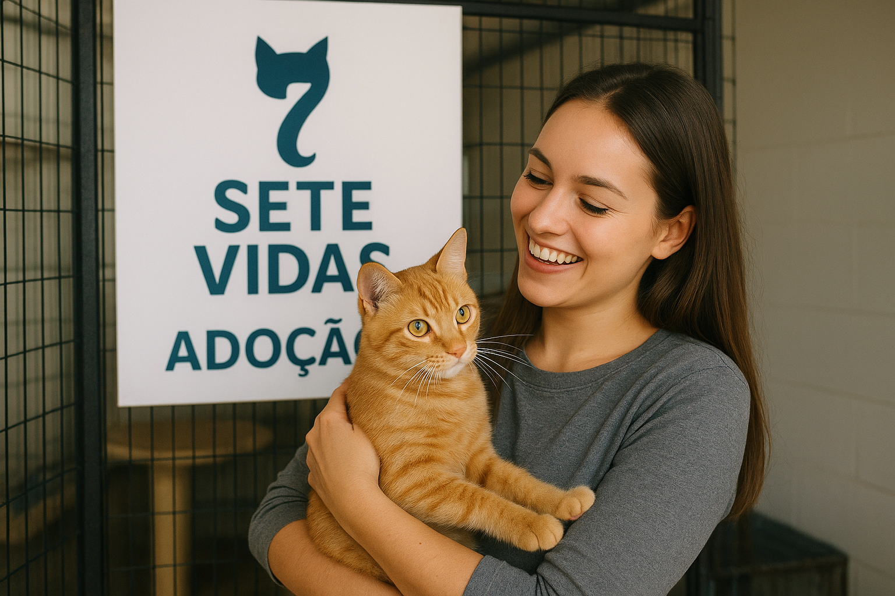
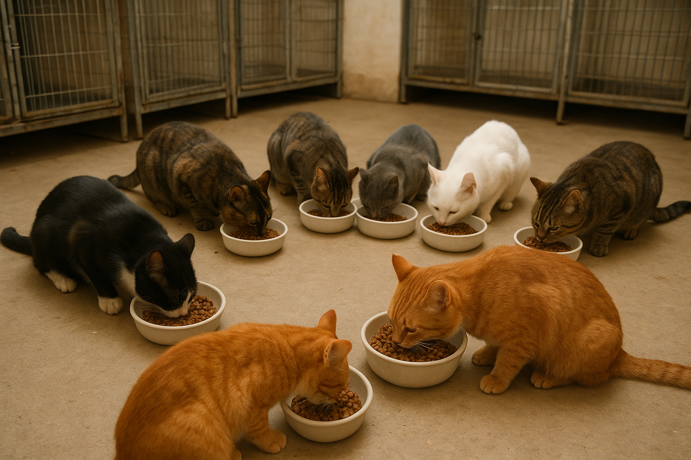

Descrição
Estamos na luta para resgatar gatos em situação de abandono, proporcionando-lhes em primeiro
lugar a avaliação com nosso veterinário, vacinas, alimentação saudável e hidratação, pois muitos
gatos chegam desidratados.
Futuramente estamos com projetos para cástralos, para a saúde do felino e controle populacional
de gatos.
Transparêcia
 Prestação de Contas 2024
| Doações | R$7.100,00 |
| Ração | R$3.233.28 |
| Remédios | R$1.327,50 |
| Vacinas | R$1.850,32 |
| Despesas Hospital | R$500.00 |
Caso queira contribuir com a nossa causa a chave pix é: pixsetevidas@gmail.com